|
ÖZET
Geleneksel
kalýplama teknolojisi ile üretilebilecek boyutlarýnýn altýndaki
ürünlerin üretilebilmesi mikro kalýplama teknolojisi ile saðlanmaktadýr.
Kalýba mikro figürlerin iþlenebilmesi için yeni teknolojiler
kullanýlýr. Ayrýca enjeksiyon makinesinin tasarýmýnda ve enjeksiyon
parametrelerinde yapýlan deðiþiklikler sayesinde mikro ürünler
kalýplanmaktadýr.
1.
GÝRÝÞ
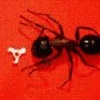Günümüzde
mikro kalýplamadan söz edilmesine raðmen bir ürünün mikro
ürün olma sýnýrý tam olarak belirlenmemiþtir. Geleneksel kalýplama
teknolojisinin yetersiz kaldýðý noktadan sonrasý artýk mikro
kalýplama teknolojisinin alanýna girer. Artýk yeter denebilecek
alt limit ise, tamamen teknolojik geliþmelere paralel olarak
küçülmektedir. Þu anki teknoloji ile kalýplanabilirliðin alt
limiti; aðýrlýk olarak 0,00013g, cidar kalýnlýðý olarak 0,01mm
olduðu söylenebilir. Bu araþtýrmada geleneksel yöntemlerle
kalýplanamayacak kadar küçük plastik ürünlerin kalýplanmasý
konusu irdelenmiþtir.
Þekil
1. Mikro ürünlere örnekler:
|
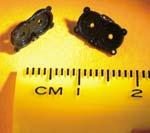 |
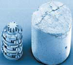 |
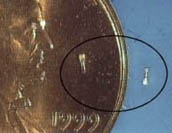 |
a)
Mikro su motoru diþli kutusu
Boyutlarý: 3 x 1 x 0.5 mm,
Kütlesi: 0,325g,
Malzemesi: Nylon |
b)
Mikro diþli sistemi. Yanýnda görünen ise bir plastik malzeme
granürü.
Malzemesi: Asetal
Kütlesi: 0,04mg |
c)
Mikro kalýplama yöntemi ile üretilmiþ dünyanýn en küçük
ürünü
Boy: 1,3 mm, çekirdek maça çaplarý: 0,63 - 0,13 mm, Yolluk
giriþ çapý: 0,076mm |
Mikro
ürünlere örnek verecek olursak; mikro diþliler, mikro diþli
kutularý, iþitme cihazlarý, medikal cihazlar, mikro motorlar,
saat parçalarý, elektronik açma kapama anahtarlarý, mikro
sensörler, lensler, fiber optik malzemeler vb. Mikro ürünlerde;
federler, delikler, çýkýntýlar, kanallar, klipsler gibi kritik
elemanlar bulunmaktadýr. Hatta ürün üzerinde insertler bulunmakta
ya da kademeli enjeksiyon iþlemi yapýlmaktadýr.
Mikro
kalýplama teknolojisi geleneksel kalýplama teknolojisine göre
birçok zorlaþtýrýcý durum içermektedir. Örneðin kalýp ayrýntýlarý
öylesine küçüktür ki imalatçý görebilmek için büyüteç kullanmak
zorunda kalabilir. Ayrýca eriyik plastiði dar kalýp kesitlerinde
ilerletebilmek için enjeksiyon parametrelerinin iyi tasarlanmasý
gerekir.
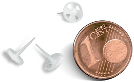
www.desma-tec.de
2.
MÝKRO ENJEKSÝYON MAKÝNELERÝ
Mikro
enjeksiyon makineleri geleneksel makinelere göre bazý farklýlýklar
içerse de temelde çalýþma prensipleri aynýdýr. Eriyik plastiðin
kalýp çukuruna transfer ediliþ yöntemi en büyük fark olarak
gösterilebilir. Ayrýca kullanýlan ekipmanlarýn boyutlarý da
en büyük farktýr. Örneðin extrüder vidasýnýn çapý 14-16 mm
arasýndadýr, nozul çýkýþ çapý ise 1,5 mm' dir.
Mikro
enjeksiyon makinelerinde kullanýlan extrüder vidasýnýn çapý
14 mm' den küçük yapýlamamaktadýr. Daha küçük çaptaki extrüder
vidasý enjeksiyon esnasýnda oluþan basýnca karþýlýk veremeyerek
kýrýlmaktadýr. Ayrýca daha küçük çaplý extrüder vidasý enjeksiyon
sürecini besleyememektedir. Mikro kalýplarda genellikle soðuk
yolluk tipi kullanýlýr. Mikro kalýplar için üretilecek sýcak
yolluk sistemleri için gerekli mühendislik altyapýsý eksiktir.
Sýk kullanýlan mikro enjeksiyon makinesinin çalýþmasýný anlatacak
olursak. Ýþlem enjeksiyon pistonuna 45° açýlý extrüder vidasýnýn
eriyik plastiði ilerleterek dikey dozajlama odasýný beslemesi
ile baþlar. Dazajlama odasýnýn dolmasýndan sonra extrüder
vidasýnýn önündeki valfin kapanmasý ile dozajlama iþlemine
geçilmiþ olur. Enjeksiyon pistonuna dik konumdaki dozajlama
pistonunun ayarlanan miktarda ilerlemesi ile dozajlama iþlemi
gerçekleþtirilmiþ olur. Dozajlama pistonunu kontrol eden hassas
servo motor sayesinde 0,001 cc hacim hassasiyetinde dozajlama
yapýlabilmektedir. Dozajlama iþleminin bitmesinden sonra enjeksiyon
ilerleyerek eriyik plastiði kalýp çukuruna dolmasýný saðlar.
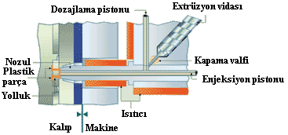
Þekil
2. Battenfeld firmasýnýn üretmiþ olduðu mikrosistem
enjeksiyon tezgahý
|
Dozajlama
iþleminin iyi yapýlmýþ olmasý gerekir. Yetersiz dozajlama
kalýp çukurunun dolmamasýna sebep olabileceði gibi aþýrý dozajlamada
ürünün kalýba yapýþmasýna yada kalýbýn hassas kesitlerinin
zarar görmesine sebep olacaktýr. Dozajlama miktarýnýn tamlýðýný
saðlayabilmek için enjeksiyon pistonunun hareketi servo motorla
5 mikron hassasiyetinde yapýlmaktadýr. Toplam enjeksiyon süreci
0,020 saniye sürmektedir. Eriyik plastiðin dar kesitlerden
geçebilmesi için yüksek basýnç ve yüksek eriyik sýcaklýðýna
ihtiyaç vardýr. Plastik malzemenin yüksek sýcaklýkta uzun
süreli beklemesi malzemenin iç yapýsýnýn bozulmasýna sebep
olacaktýr. Bu durum göz önünde bulundurularak eriyik plastik
yüksek sýcaklýkta uzun süre bekletilmemelidir. Geleneksel
enjeksiyon tezgahlarýnda bu süre iki saati bulabilmesine raðmen
mikro enjeksiyon tezgahlarýnda ise bu süre iki dakikaya kadar
düþmektedir.
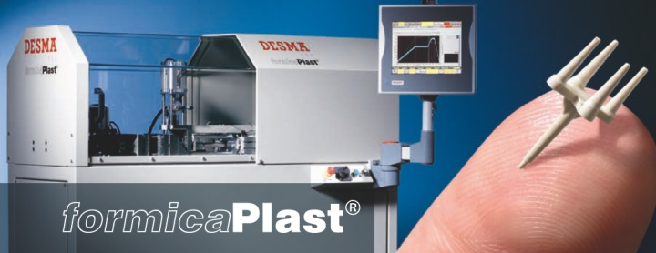
www.desma-tec.de
3.
MÝKRO KALIPLAR VE ÜRETÝM TEKNOLOJÝLERÝ
Mikro
kalýp tasarýmý yapýlýrken plastik malzemelerin viskoz özellikleri
dikkate alýnýr. Malzeme donmadan kalýp çukurunu doldurabilesi
için yolluk ve daðýtýcýlar ürüne göre çok büyük ebatlarda
yapýlmaktadýr. Böyle yapýlmasýnýn bir diðer sebebi ise extrüder
vidasýnýn transfer hacminin ürün hacminden çok fazla olmasýdýr.
Öyle ki enjekte edilen plastiðin %1 lik kýsmýný ürün olarak
elimize alabiliriz. % 99 luk kýsým ise ya çöpe gitmektedir
yada geri dönüþtürülmüþ malzeme olarak kullanýlmaktadýr. Fakat
ürünler çok özel amaçlý kullanýldýðý için geri dönüþümlü malzemeler
pek kullanýlmak istenmez. Çöpe giden malzeme miktarý, kalýpta
deðiþiklikler yapýlarak hem dolum garantisini hem de yeterli
malzeme miktarýný saðlayarak % 80 lere kadar düþürülebilmektedir.
Bu azalma miktarý az gibi görünse de çok pahalý (10USD/g civarýnda)
olan medikal malzemelerde büyük kazançtýr.
Geleneksel
ürün ölçeðinde 64 gözlü kalýp üretilebilirken mikro ölçekte
bu deðer çok komiktir. Çok gözlü bir kalýpta ne istenen tolerans
hassasiyeti ne de dolum dengesi saðlanabilir. Göz sayýsý mümkün
olduðu kadar küçük tutulmalýdýr. Mikro ölçekli ürünlerde yüzey
kalitesi oldukça önemlidir. Ýmal edilen kalýp çekirdek yüzeyi
ilk bakýþta pürüzsüz görünse de yakýndan bakýldýðýnda istenen
yüzey kalitesini veremeyeceði görülür. Bu yüzden kalýp kaliteli
bir þekilde parlatýlmalýdýr.
|
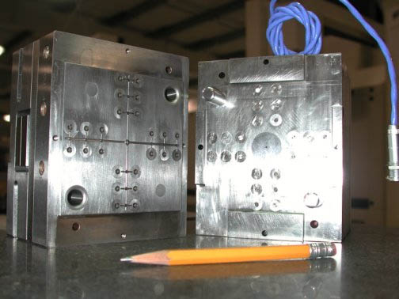
Þekil 3. 24 gözlü, sýcak yolluk burçlu mikro kalýp |
Mikro
parçalarýn üretileceði plastik malzemeler iyi seçilmelidir.
Tavsiye edilen yüksek akýþ indeksine ve uygulama sýcaklýðýnda
düþük viskoziteye sahip plastiklerdir. Ayrýca, cam elyafý
takviyeli malzemeler dar kesitli kanallardan akýþ için uygun
deðildir. Mikro ürünlerin üretimi için kullanýlan özel plastikler
üretilmektedir.
Mikro ölçekli kalýplarýn üretimi için geliþtirilen elektronik
sinyal algýlayýcýlar sayesinde üretim toleransý ±10 nanometreye
kadar indirgenmektedir.
Mikro
kalýp üretiminde kullanýlan teknolojiler; EDM, mikro frezeleme,
asitle aþýndýrma, lazerle iþleme, UV lithography olarak sayýlabilir.
3.1.
MÝKRO FREZELEME YÖNTEMÝ
Mikro
frezelerin geleneksel frezelere göre farký boyutlarýnýn küçük
olmasý ve iþleme hassasiyetinin yüksek olmasýdýr. Hassas servo
motorlar ve hareket elemanlarý kullanýlarak tezgah eksen hareketlerinin
kararlýlýðý saðlanmýþ olur. Geleneksel CNC freze tezgahýnýn
iþleme hassasiyeti 1-3 mikron olabilmekteyken, CNC mikro freze
tezgahýnýn iþleme hassasiyeti 30 nanometreye kadar inmektedir.
Hareket hassasiyetini saðlayabilmek için hava taþýmalý yataklar
kullanýlmaktadýr. Ayrýca henüz deney aþamasýnda olan hidro-dinamik
akýþkan destekli yataklama da bu amaçla kullanýlacaktýr.
Mikro
frezelerde elmas kesiciler kullanýlmaktadýr. 200 mikrona kadar
küçük çaplý elmas kesiciler üretilmektedir. Bu kesicilerle
son derece küçük detaylar ve pürüzsüz yüzeyler elde edilebilmektedir.
Ayrýca elmas kesiciye ultra-sonik titreþim hareketi yaptýrarak
ta kalýp yarýmlarý iþlenmektedir. Elmas kesicilerin en büyük
dezavantajý çelik malzemeleri iþleyememeleridir. Çelik yerine
nikel, alüminyum veya bakýr kalýp takýmlarý iþlenmektedir.
Çelik kalýp takýmlarý için karbür kesiciler üretilmektedir.
Karbür kesicilerde ise 125 mikron çapa kadar kesiciler üretilmektedir.
Böylece daha küçük detaylar elde edilebilmektedir. Fakat elmas
kesici kadar pürüzsüz ve düzgün yüzeyler elde edilememektedir
3.2.
EDM YÖNTEMÝ
CNC
EDM tezgahlarý sayesinde 1,5 mikron dalma hassasiyeti ile
kompleks parçalarýn kalýp çekirdekleri kolaylýkla üretilebilmektedir.
Tezgah eksen hassasiyeti ±2 mikron olduðundan maksimum ölçü
tamlýðý saðlanmýþ olur. Elektro-tel erozyon teknolojisi kullanýlarak
ta kalýp imalatý yapýlmaktadýr. Küçük profilleri oluþturabilmek
için 0,025 mm çapýndaki tel ile kesim yapýlmaktadýr.
3.3.
UV-LITHOGRAPHY YÖNTEMÝ
Kalýp
ve prototip üretiminde yepyeni bir yaklaþým olan UV-Lithography
teknolojisi mikro
kalýp üretiminde de kullanýlmaktadýr. Üretim süreci cam veya
silikon tabanlý bir yüzeyden baþlar. Dilimler halinde bölünen
ürün geometrisi her firmanýn kendine has ürettiði teknoloji
ile katman katman inþa edilir. En alt geometriden baþlanarak
her katman inþa edilerek kalýp çekirdeði oluþturulmuþ olur.
Bu kalýp çekirdekleri daha sonra nikel veya nikel alaþýmlarý
ile kaplanýr. Böylece elde edilen kalýp yüzeyi EDM ve mikro-frezeleme
ile elde edilenden çok daha pürüzsüz ve düzgün olur.
|
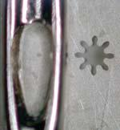
Þekil 4. UV-Lithography teknolojisi ile üretilmiþ kalýp
çukuru.
Basýlan plastik malzeme: Nylon, diþli çapý: 0,48 mm
ürün cidar kalýnlýðý: 0,066 mm. |
UV-Lithography
yöntemi ile 10 mikrona kadar girinti ve detaylar kolaylýkla
oluþturulabilir. EDM ve mikro-frezeleme teknolojisinde bu
deðerin 100 mikron olduðu düþünülürse oldukça mükemmel bir
hassasiyet ortaya çýkmaktadýr. Parça ölçüsünde ise ±2 mikrona
kadar ölçü toleransý saðlanýr. Ayrýca bu yöntemle üretilen
çok gözlü kalýplarda çekirdeklerin birbirini karþýlamama sorunu
ortadan kaldýrýlýr. Bu yöntemle bir kalýp 6- 8 hafta arasýnda
yapýlabilmekte olup her göz için 5 milyon baský yapýlabilmektedir.
Fakat bu yöntemin henüz giderilmemiþ sorunlarý vardýr. Kalýp
üretimi pahalýdýr, kalýp sadece x ve y eksenlerinde inþa edildiði
için kalýp çekirdeði tasarlanýrken üretim kalitesi de göz
önünde bulundurulmalýdýr.
3.4.
LAZERLE AÞINDIRMA YÖNTEMÝ
Mikro
kalýp üretiminde kullanýlan bir diðer yöntem ise lazerle aþýndýrma
teknolojisidir. 5 mikron geniþliðindeki lazer ýþýk demetinin
10-100 nanosaniyelik atýmlarla kalýp çeliði üzerine yönlendirilmesidir.
Böylece çelik aþýndýrýlarak kalýp çekirdeði oluþturulmuþ olur.
Iþýk demetinin geniþliði 355 nm'ye kadar düþürülebilir. Küçük
ýþýk demetleri yüzey kalitesinin yüksek olduðu durumlarda
kullanýlýr. Her ne kadar aþýndýrýcý lazer ýþýnýnýn geniþliði
bu kadar küçültülebilse de kullanýlan tezgahýn eksen hassasiyetine
baðlý bir tolerans sýnýrýnýn olduðu da unutulmamalýdýr. Uzun
süreli lazer atýmlarý malzeme üzerinde ýsýsal yýðýlmalara
sebep olur. Bu durum kalýp yüzey kalitesini olumsuz etkilenmektedir.
4.
MÝKRO ÜRÜNLERÝN BÝLGÝSAYAR ORTAMINDA DOLUM ANALÝZÝNÝN YAPILMASI
Makro
ürünlerde olduðu gibi mikro ürünlerin dolumu da bilgisayar
ortamýnda simüle edilerek ürün kalitesi önceden tahmin edilebilmektedir.
Bu amaçla yola çýkan Miniature Tool & Die Inc. (MTD, Charlton,
MA) ve University of Massachusetts-Lowel's Plastics Engineering
Dept. (UML, Lowel, MA) kuruluþlarý hazýrlamýþ olduklarý Moldflow
akýþ analiz programý sayesinde mikro ürünler için gerekli
olan kalýp dolum analizleri yapýlabilmektedir. Program yazýlýrken,
yüksek sýcaklýktaki plastik malzemenin mikro kanallardan yüksek
basýnçta geçerken ki davranýþý dikkate alýnmýþtýr. Geleneksel
analiz programlarý kullanýlsa bu basýnç ve sýcaklýk deðerleri
uygulanabilirliklerini kaybetmiþ olarak bize gösterilecektir.
|
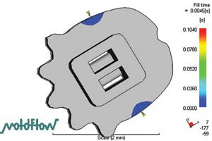 |
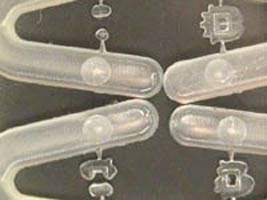 |
|
Þekil
5. Moldflow yazýlýmý ile simüle edilmiþ bir analiz ve
uygulamasý. |
5.
SONUÇ
Görülüyor
ki teknoloji ilerledikçe kullandýðýmýz gereçler küçülmektedir.
Mikro kalýplama teknolojisi de bu küçülmede yerini almýþtýr
ve ilerlemenin en büyük destekçilerinden biri olma konumuna
gelmiþtir. Kullanýlan teknoloji ve yöntemler açýsýndan mikro
kalýplama oldukça hassas bir iþtir. Geleneksel kalýplama teknolojisinin
sýnýrlarýný zorlayan bir teknoloji olan mikro kalýplama her
geçen gün kullandýðýmýz sýradan ürünlerde de yerini almaya
baþlamaktadýr.
KAYNAKLAR
1.
www.plasticstechnology.com
Micromolding Sizing Up the Challenges, Mikell Knights
2. www.plasticstechnology.com
Micro Molds Make Micro Parts, Mikell Knights
3. www.plasticstechnology.com
Mold Micro Parts Just One Pellet at a Time, Mikell Knights
4. www.sovrin.com
(resmi web adresi)
5. www.micromoulding.com
(resmi web adresi)
6. www.immnet.com
A first in micromold flow analysis, Carl Kirkland, IMM - Mayýs
2003
7. www.immnet.com
Macro growth opportunities in micro CIM, Carl Kirkland, IMM
- Temmuz 2002
8. www.miniaturetool.com
(resmi web adresi) |